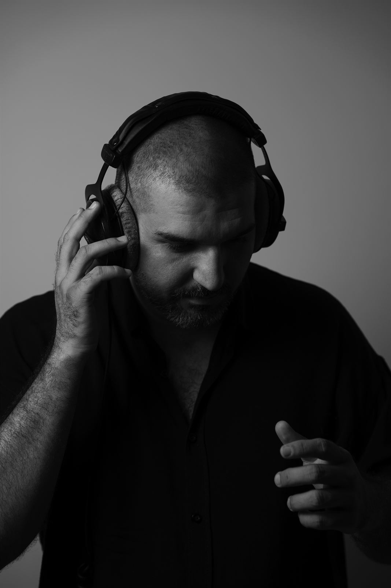

About
Bruce Nemeth
Behrooz Nematollahi — an interdisciplinary artist, art director and curator living and working in London. The work often returns to Shiraz, where it began.
The practice sits where sound, site-specific installation, and curation meet — cross-disciplinary by nature, multisensory by intent.
My work interrogates cultural memory and perceptual experience, bringing spatialised sound, traditional calligraphy, and architectural intervention into a single room. It is rooted in a cross-cultural dialogue between Iranian and UK contemporary contexts: I have conceived, directed, and curated commissioned installations — Wordless and Forgotten — leading cross-disciplinary teams of partners to build immersive environments where visual, sonic, and spatial languages merge.
Across installation and stage work, the pieces explore the fluidity of identity, the rhythms of repetition, and the chaos of chance — spaces that invite an audience to lose themselves and find meaning. Through the interplay of sound, light, and space, each piece presses at the boundaries of perception and asks for a deeper connection with the environment and the self.

Practice
Four rooms of one house
Sound
Field recording, spatialised sound design (Ambisonics, multichannel), and sound for film and stage — from foley work in Tehran studios to location recording for award-winning documentaries.
Music composition & analysis
Thirty original compositions across performance, installation, and digital platforms — including Mirror, nine electroacoustic pieces released on Spotify and Apple Music (2025–26) — alongside leading the Klezmeri Ensemble and teaching the social history of music.
Curation & art direction
Conceiving exhibitions and immersive environments and leading the teams that build them — currently as art director at Bimo Axis, London; earlier, more than thirty exhibitions and events at Honar Cinema and Gallery, Shiraz.
Installation
Site-specific and audio-visual installation — video, projection, and spatial intervention, with particular care for heritage and fragile architectural spaces.
Exhibitions & installations
Selected, 2019 — now
-
2025
Wordless — Colleague Complex Gallery, Shiraz
Inaugural exhibition of the gallery — action calligraphy, live sound, video projection. Curator, art director & sound designer.
-
2025
Forgotten — Dalan Restoration Studio, Shiraz
Site-specific installation in a Qajar-era house — nine mystical words in spatialised sound. Curator, art director & sound designer.
-
2025
Anima, the inner life — spudWORKS Open, New Forest
Interactive audiovisual installation on interiority and presence.
-
2025
Cities and Memory — international sound-mapping project
Accepted field-recording and composition contribution.
-
2024
Mirror — MA final exhibition, Arts University Bournemouth
Audio-visual installation on identity, repetition, and randomness — Innovation Prize.
-
2024
Aequilibrium — spudWORKS Open, Sway
Audio-visual work on balance and release — Highly Commended Artist.
-
2023
Rhinoplasty — MA Fine Art Symposium, Anglia Ruskin, Cambridge
Site-specific sound installation — spoken word, a mirror, and the acoustics of a church space.
-
2019
Two — Honar Cinema and Gallery, Shiraz (solo)
Audio-visual installation on duality and transformation.
-
2019
Empty Orchestra — Honar Cinema and Gallery, Shiraz
Research-based performance of Eastern European folkloric traditions.
-
2019
Address Unknown — Honar Cinema and Gallery, Shiraz
Performance after Kathrine Taylor — sound designer & assistant director.
Sound for film & stage
Credits
- Amiroo (2022) — short documentary · sound recordist & designer Best Short Documentary, Seoul International Film Festival 2023 · screened at Echo Briks 2024
- Gavazn (2022) — short film · sound mixer & boom operator
- The Pledge (2022) — short film · location sound mixer
- Ramak Industry (2022) — industrial documentary · sound designer
- closed-eye (2021) — short film · sound mixer & boom operator
- Of the World, Dust Remains (2019) — interdisciplinary stage work by Roozbeh Tabandeh · stage assistant
- Recursion (2018) — short film · sound designer & composer
- Angel's Smile (2017) — documentary · sound designer & composer
- Dandelion (2015) — musical theater · sound designer
- Zaar (2013) — theater · sound designer & composer Best Theatrical Music, Fajr Festival of Fars
Experience
Where the work has lived
-
2025 —
Art director — Bimo Axis, London
Creative direction for cross-disciplinary projects merging art, design, and experiential space, for clients across the UK and Doha.
-
2020 —
Sound designer & electronic composer — independent
Field recording and multisensory projects across film, art, and commercial work; sound for more than ten short films and two feature-length documentaries.
-
2017 —
Band leader & arranger — Klezmeri Ensemble, Shiraz
Violinist and arranger of Balkan and Klezmer repertoire; commissioned Nowruz festival performances (2021, 2022).
-
2023 – 24
Sound consultant — Arts University Bournemouth
Recording and post-production guidance for Film Practice MA projects, bridging the Fine Art and Film programmes.
-
2021 – 23
Recording studio assistant & foley artist — Audio Engineering Academy, Tehran
Session recording, foley, field recording, and mixing for film and studio productions.
-
2017 – 20
Event manager & art consultant — Honar Cinema and Gallery, Shiraz
More than thirty exhibitions, festivals, and events; led the cinema's transformation into a working arts hub.
Education & recognition
Study, prizes
-
2023 – 24
MA Fine Art (Merit) — Arts University Bournemouth
Final project Mirror: Exploring Repetition and Randomness — awarded the Innovation Prize (2024) and a Travel Prize (2023).
-
2013 – 17
BA Fine Arts (performance) — Shiraz Azad University of Art and Architecture
-
2024
Highly Commended Artist — spudWORKS Open, Sway
For the audiovisual installation Aequilibrium.
-
2023
Best Short Documentary — Seoul International Film Festival
For Amiroo — sound recordist & sound designer.
-
2013
Best Theatrical Music — Fajr Festival of Fars
For the theater production Zaar.
Research & teaching
The studious side
Sonic Textiles
Ongoing research (2025) into bidirectional translation between Persian musical modes and contemporary fabric design — matrix systems and fractal geometry as the bridge, with Dr. Razie Jeyranjade.
The Sound of Identity
Field recordings of Persian heritage sites and reconstructed soundscapes (2025) — how geographic and cultural sound shapes an artist's sense of self.
Teaching
Instructor at the Forough and Mahour institutes, Shiraz (2025): the social history of music, and contemporary art history through photography — plus workshops on Klezmer and Balkan traditions.
Contact
One line is enough.
For exhibitions, partnerships, research, or the works in the showcase — write any time.
Brucenemeth@outlook.com